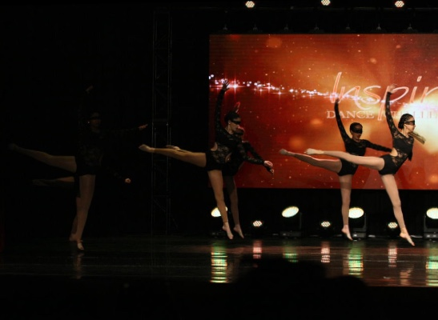
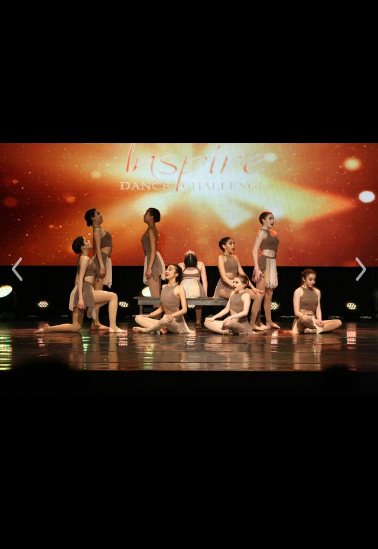
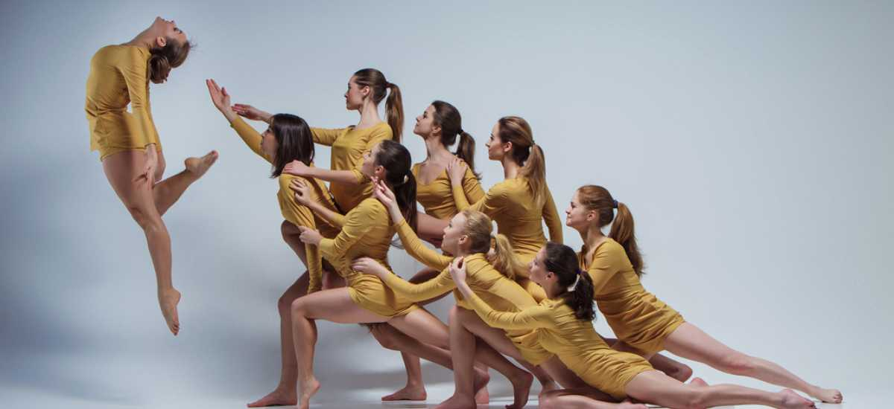
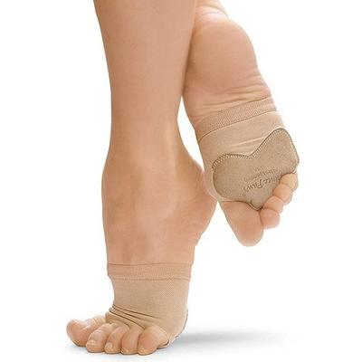
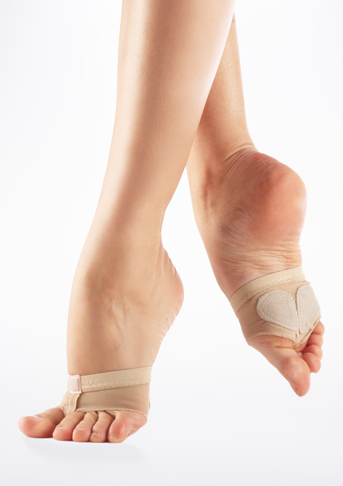
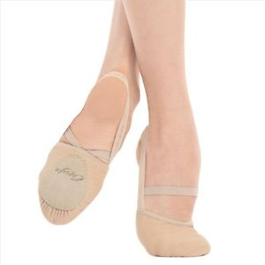
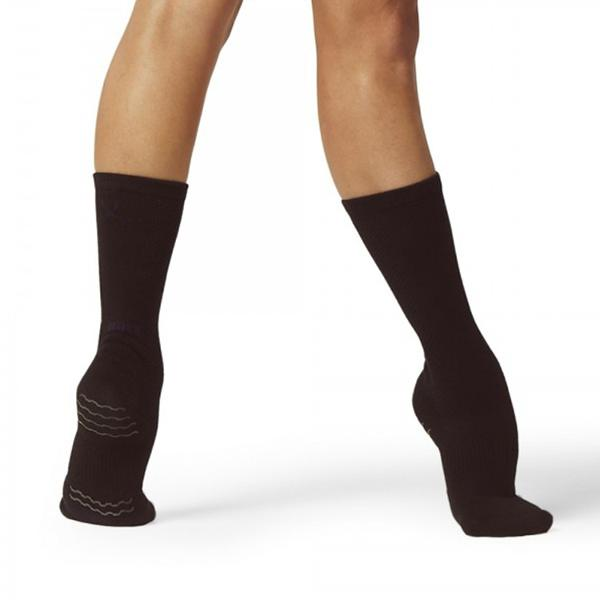

Contemporary dance is a genre of dance that developed during the mid twentieth century and has grown to become one of the dominant genres for formally trained dancers throughout the world, with particularly strong popularity in the U.S. and Europe. Although originally informed by and borrowing from classical, modern, and jazz styles, it has come to incorporate elements from many styles of dance. Due to its technical similarities, it is often perceived to be closely related to modern dance, ballet, and other classical concert dance styles. In terms of the focus of its technique, contemporary dance tends to combine the strong but controlled legwork of ballet with modern that stresses on torso. It uses contract-release, floor work, fall and recovery, and improv characteristics of modern dance. Unpredictable changes in rhythm, speed, and direction are often used. Also, contemporary dance sometimes incorporates elements of non-western dance cultures, such as elements from African dance like bent knees, or movements from the Japanese contemporary dance, Butoh.
Contemporary Dancers
| Firstname | Lastname | Age |
|---|---|---|
| Autumn | Miller | 18 |
| Briar | Nolet | 20 |
| Michael | Dameski | 23 |
| Sofia | Boutella | 37 |
| Elliana | Walmsley | 12 |
| Martha | Graham | Deceased |
| Emma | Portner | 24 |
| Avneet | Kaur | 17 |
Contemporary is danced either wearing dance paws(far left), foot undeez(middle left), halfshoes(middle right), contemporary socks(far right), or barefoot.
   This page is hosted by github and has been validated.